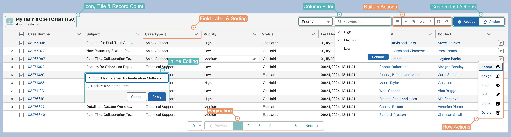

A #Data List is derived directly from a single SOQL query — yet goes far beyond a traditional datatable. It supports dynamic queries (such as displaying a related list for a Lightning record), full CRUD operations, inline and mass editing, all standard field types, pagination, column filters, and a built-in query builder.
A #Data List is highly configurable through its Executable record, with settings that span:
What makes a #Data List especially powerful is its ability to associate Action Buttons directly with the list. Each button carries its own customized logic and can use the selected rows as input — keeping every action cohesive with the list it operates on.
#Data Lists can be grouped into Pipelines and embedded on Lightning pages with specific variants (styles), giving teams a unified, interactive way to view, edit, and act on records right where they work.
